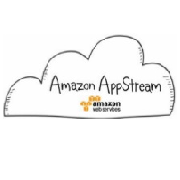

<<戻る
次へ>>
クラウド内で規模の変更が可能なコンピュータ処理能力を提供するウェブサービス。管理者アクセスが可能な仮想マシンとして提供される -- Amazon EC2(Elastic Compute Cloud)
フルマネージド型の「検索サービス」。高速で拡張性に優れた検索機能をアプリケーションに容易に統合できる -- Amazon CloudSearch
EC2およびS3を利用してホストされる Hadoopクラスタフレームワークのサービス。莫大な量のデータ処理を、簡単に、費用対効果が高く、利用することができる -- Amazon Elastic MapReduce(EMR)
フルマネージド型の NoSQL データベースサービス。秒間の読み書き性能を「ユニット」という単位で指定でき、必要に応じていつでも変更することができる -- Amazon DynamoDB
フルマネージド型のRDBMSサービス。必要に応じてコンピュートリソースやストレージ容量を拡張できる柔軟性や、煩わしい管理作業を軽減する自動バックアップやパッチ当て機能により、利用者はアプリケーションの開発やビジネスに集中できる。MySQL、Oracle Database、SQLServer、PostgreSQLが利用できる -- Amazon RDS(Relational Database Service)
アクセス頻度の低いデータや、取り出しに数時間かかっても問題ないデータに合わせて最適化された、低コストのオンラインストレージサービス。API経由のアクセス以外に、Amazon S3と連携することで、Management Console からデータを管理することも可能である -- Amazon Glacier
EC2に割り付けて利用する固定IPアドレス。インスタンスに割り当てていれば無料で利用できるが、未割り当てだと時間単位の利用料がかかるので注意が必要 -- Elastic IPs
NASAの火星探査機Curiosityの着陸映像をライブ配信する際にも利用された、エッジロケーションのグローバルなネットワークを利用し、静的コンテンツやストリーミングコンテンツを高パフォーマンスに配信をするサービス -- Amazon CloudFront
データアクセスをメモリ上にキャッシュすることでアプリケーションのパフォーマンスを向上させる memcached や Redis に準拠しているキャッシュサービス -- Amazon ElastiCache
テンプレートを利用することで、AWSのインフラやリソースを集約し、スタックとしてデプロイすることができるサービス -- AWS CloudFormation
複数のAmazon EC2インスタンス間で、アプリケーショントラフィックの負荷を自動的に分散するためのサービス -- Amazon Elastic Load Balancer(ELB)
AWSインフラ内に、仮想ネットワーク環境として、ユーザが制御可能な閉域網を構築できるサービス -- Amazon VPC(Virtual Private Cloud)
ユーザがAWSリソースを管理するためのWebベースの管理コンソール -- AWS Management Console
いつでも、ウェブ上のどこからでも容量に関係なくデータを格納・取得できる耐久性に優れたオンライン・ストレージサービス。静的なウェブサイトのホスティングも可能 -- Amazon S3(Simple Storage Service)
オンプレミスのIT環境やAmazon EC2とAWSのストレージインフラをシームレスに統合する仕組み。iSCSIで接続可能な仮想ストレージを提供する -- AWS Storage Gateway
稼働率100%のサービスレベルアグリーメントが適用されているドメインネームシステム（DNS）サービス -- Amazon Route53
ユーザとAWSのネットワークを専用線で接続するためのサービス -- AWS Direct Connect(DX)
EC2インスタンスで使用するためのブロックレベルのストレージボリューム。Provisioned IOPSオプションを使えば、必要なI/O性能を指定してディスクを作成できる -- Amazon EBS(Elastic Block Store)
転送用のポータブル記憶装置を用いてAWS内外へ、インターネット転送を使わずに大容量データを転送できるサービス -- AWS Import/Export
AWSクラウド上で実行されるソフトウェアのためのオンラインストア -- AWS Marketplace
gitやIDEを使い、AWSクラウド上に、アプリケーション実行環境を迅速に、簡単にデプロイするためのサービス -- AWS Elastic Beanstalk
VPC内のEC2に複数のNICを設定できる機能 -- Elastic Network Interface(ENI)
年間10億通を送ると言われているAmazon.comが培ったEメールインフラストラクチャのノウハウを利用することができる、非常に拡張性が高くコスト効率の良い大量Eメール送信サービス -- Amazon SES(Simple Email Service)
AWSで一番最初にリリースされたサービスで、コンピュータ間でメッセージを移動する際に、それらを格納するための、信頼性の高い、拡張性のある、キューサービス -- Amazon SQS(Simple Queue Service)
AWSクラウドのリソースと、AWS上で実行するアプリケーションをモニタリングできるサービス。利用料金の監視もできる -- Amazon CloudWatch
AWSサービスおよびリソースへのアクセスを安全にコントロールするために、ユーザーとグループを作成および管理し、アクセス権を使用して AWSリソースへのアクセスを許可および拒否できる仕組み -- AWS IAM(Identify and Access Management)
OSやソフトウェアがインストールされており、実行可能な状態で保存されている仮想マシンのディスクイメージ -- AMI(AmazonMachine Image)
HTTP通知やEメール通知、SMS通知やAmazon SQSへの通知ができるサービス。アプリケーションからアプリケーション、人へのメッセージの迅速な配信環境を実現できる -- Amazon SNS(Simple Notification Service)
フルマネージド型の拡張性と耐障害性に優れたアプリケーションを構築するためのワークフローサービス。1つのアプリケーションを構成するさまざまな処理ステップを「タスク」として作成することにより、分散アプリケーションの作業を実行することができる -- Amazon SWF(Simple Workflow Service)
可用性と柔軟性に優れたデータストアサービス。AWS Management Consoleには表示されていない -- Amazon SimpleDB
フルマネージド型のデータウェアハウスサービス。クラスター構成を用いて、ペタバイト級のデータセットに対して高いクエリ性能を実現する -- Amazon Redshift
AWSの各サービス、ならびにオンプレミスのデータソース間を、指定された間隔で、データ処理やデータ移動ができる、データドリブンなオーケストレーションサービス -- AWS Data Pipeline
Chefレシピを利用して設定が可能なDevOpsソリューションサービス。各種リソースをレイヤーという論理的なモデルで管理する -- AWS OpsWorks
AWSを使用するJavaアプリケーションの開発、デバッグ、デプロイが容易にできるEclipse Java IDEのオープンソースプラグイン -- AWS Toolkit for Eclipse
AWSの各種リソースをPowerShellから制御可能とするツール -- AWS Tools for Windows PowerShell
AWSの各種リソースをコマンドラインから制御可能とするツール -- AWS CLI(The AWS Command Line Interface)
タスクをワーカーに依頼することで、コンピュータだけでは実現不可能な仕事を処理することができるサービス -- Amazon Mechanical Turk
高度なスケーラビリティ、使いやすさ、経済性を実現するクラウドの音声・動画変換サービス。音声・動画ファイルをスマートフォン、タブレット、PC などのデバイスで再生可能なバージョンに変換できる。音声のみのストリームを作成するために、ビデオファイルから音声を抜き出すこともできる。 -- Amazon Elastic Transcoder
AWSを使用する .NET アプリケーションの開発、デバッグ、デプロイが容易にできるMicrosoft Visual Studio の拡張機能 -- AWS Toolkit for VisualStudio
CloudWatch で監視するリソースがしきい値を超えた場合に、処理ノードを自動的に増減することができる仕組み -- Auto Scaling
AWSの各種リソースをAndroidプログラムから制御可能とするAPI環境 -- AWS SDK for Android
AWSの各種リソースを.NETプログラムから制御可能とするAPI環境 -- AWS SDK for .NET
ElastiCache の Auto Discovery にも対応しており、AWSの各種リソースをPHPプログラムから制御可能とするAPI環境 -- AWS SDK for PHP
AWSの各種リソースをRubyプログラムから制御可能とするAPI環境 -- AWS SDK for Ruby
ネットワークトラフィックの経路を判断する際に使用される、ルートと呼ばれる一連のルールを含む仕組み。VPC の各サブネットを関連付ける必要があり、サブネットのルーティングは、これによりコントロールされる。 -- Route Table
AWSの各種リソースをiOSプログラムから制御可能とするAPI環境 -- AWS SDK for iOS
AWSの各種リソースをnodeJSプログラムから制御可能とするAPI環境 -- AWS SDK for nodeJS
AWSの各種リソースをPythonプログラムから制御可能とするAPI環境 -- AWS SDK for Python
AWSの各種リソースをJavaプログラムから制御可能とするAPI環境 -- AWS SDK for Java
AWSの各種サービスを直接呼び出すような、リッチなブラウザベースのアプリケーションを、サーバサイドの実装なしで作成可能とするJavaScriptのAPI環境 -- AWS SDK for JavaScript
AWS APIに対するコールを記録し、指定したS3バケットにログファイルを保存することができる機能。ログファイルが保存されるたびに、Amazon SNSのトピックに通知を送ることができる。 -- AWS CloudTrail
クラウドで実現されるデスクトップコンピューティング。PC、スマートフォン、タブレットなどあらゆるデバイスからアクセス可能で、すべてのデバイスで同期する。ユーザディスク領域は、定期的にS3にバックアップされる。 -- Amazon WorkSpaces
クラウド上から高品質でリッチな画像を使ったアプリケーションのストリーミングを可能にする。 -- Amazon AppStream
ビッグデータのリアルタイム・ストリームを扱うために設計されたマネージドサービス。大規模でリアルタイムなデータ投入と処理が必要とされる、あらゆる場面で使うことができる。 -- Amazon Kinesis
EC2インスタンスへのコードのデプロイメント、アップデートを自動化するサービスで、アプリケーションの複雑なアップデート処理、デプロイ中のダウンタイムの回避、新規機能の迅速なリリースを容易に行なうことを可能とする。 -- AWS CodeDeploy
ユーザー認証機能だけでなく、データ同期に関する機能を提供するシンプルなサービスで、モバイルデバイス間でユーザーのアプリケーションデータを安全に管理また同期するのに役立つ。 -- Amazon Cognito
AWSが提供する様々なサービスの構成管理、履歴管理を実現するサービス。AWS上にある構成アイテムのリソース変更状況をS3上にログとして記録して、リソースの構成変更履歴を時系列で参照することができる。 -- AWS Config
AWS リソースを既存のオンプレミス Microsoft Active Directory で接続したり、AWS クラウド上に新しいスタンドアロンなディレクトリをセットアップしたりできる管理型サービスです。 -- AWS Directory Service
クラウドでアプリケーションをビルドして実行するためにEC2インスタンスを設定したり、起動、監視したりする必要も、OSやプログラミング言語の環境をインストールする必要もない、管理不要のコンピューティングプラットフォームです。S3のバケットにアップロードされたファイルへの変更やAmazon Kinesisのストリームに届いたメッセージ、Amazon DynamoDBにおけるテーブルの更新を受けて、ユーザーが夭死したコードを自動的に実行します。 -- AWS Lambda
アプリケーションの使用状況データを簡単かつ費用対効果に優れた方法で収集、分析できるようにするサービスです。Amazon Cognito のアイデンティティプールの設定とAWS Mobile SDKやREST APIによってユーザーのモバイルアプリケーションのDAU、MAU、セッション数、DAUあたりの平均売り上げ、リテンションなどが取れます。カスタムイベントを設定することもできます。収集したデータはマネジメントコンソールから確認だけでなくS3やRedshiftへ自動で出力することができます。 -- Amazon Mobile Analytics
ユーザーのAWS 環境を検査し、コスト削減、システムパフォーマンス向上、セキュリティギャップの封鎖につながる推奨事項をお知らせします。コスト最適化、セキュリティ、耐障害性、パフォーマンス改善の4 つのカテゴリに分けてすばやく確認できます。 -- AWS Trusted Advisor
エンタープライズのためのフルマネージド型のセキュアな文書保存と共有サービスです。ユーザーは好みのデバイスから、いつでもどこでもクラウド上に保存されているファイルにアクセスし、表示してフィードバックを残すことがでる。既存の Active Directory と統合でき、組織内のどのユーザーにサービスへのアクセスを許可するかを管理することもできる。当初はAmazon Zocaloという名称で発表された。 -- Amazon WorkDocs
エンタープライズのためのフルマネージド型のセキュアなメールおよびカレンダーサービスです。既存の Active DirectoryやAWS Directory Serviceでユーザ情報を管理することも可能です。Microsoft Outlook、Webブラウザ、iOS および Android ネイティブの Eメールアプリケーションを使用して、E メール、連絡先、カレンダーにシームレスにアクセスできます。 -- Amazon WorkMail
